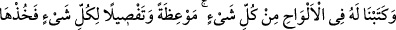
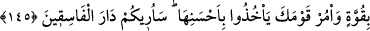

Ey Mûsâ, nübüvvet şerefinden ve hikmetten “sana verdiğimi al ve” bu nimete
“şükredenlerden ol.”
et-Te’vîlâtü’n-Necmiyye’de şöyle denilmiştir: “Sana verdiğimi al.” Yani sana
kabiliyet olarak yerleştirdiğim şeyleri ve seni insanlar üzerine üstün kıldığım
peygamberlik ve benimle konuşma gibi özellikleri al “ve şükredenlerden ol.” Çünkü
şükür seni, Rabbini görme arzuna kavuşturacaktır. Şükür, “Andolsun şükrederseniz
elbette size nimetimi artırırım.” (İbrâhim, 17/7) ayeti muktezasınca nimetin artmasını
gerektirir. “Ziyade” ise: “Güzel davrananlara daha güzel karşılık ve fazlası var.”
(Yûnus, 10/26) ayetinin beyanına göre Allah’ı görmektir. Peygamberimiz (a.s.) bu
ayetin tefsîrinde şöyle buyurmuştur: “Fazlası”, Allah’ı görmek, “güzel karşılık” ise
cennettir.”[90]
145. Nasihat ve her şeyin açıklamasına dair ne varsa hepsini Musa için levhalarda
yazdık. (Ve dedik ki): Bunları kuvvetle tut, kavmine de onun en güzelini almalarını
emret. Yakında size, yoldan çıkmışların yurdunu göstereceğim.
“Öğüde ve herşeyin açıklamasına dair” dînî bakımdan ihtiyaç duyulacak hükümler
ve öğütlerden “ne varsa hepsini Mûsâ için levhalara yazdık.” Yani, kalem-i a‘lâya
“Yaz” diye emrettik ya da Cebrâil’e “Kalem ile zikret ve nur nehrinin kalemiyle yaz.”
dedik
Mûsâ (a.s.)’a verilen levhalar, sahih olan görüşe göre dokuz tane olup hepsi de yeşil
zümrütten idi. Bunların içinde basılmış mühür nakışı gibi Tevrat yazılıydı ve her bir
levhanın uzunluğu on zira idi. el-Kamûs’ta zikredildiğine göre levh, odun veya kemikten
olan geniş sahifedir. Çoğulu “elvah”tır.
Rivayete göre Mûsâ (a.s.)’ın Allah’ı görmek istemesi Arefe günü, Tevrat’ın verilmesi
ise Kurban bayramı günü olmuştur.
Mukatil demiştir ki: Levhalarda şunlar yazılmıştı: “Ben, Rahman ve Rahim olan
Allah’ım. Bana hiçbir şeyi ortak koşmayın, yol kesmeyin, zina etmeyin ve ana babaya
âsî olmayın.”
Ve dedik ki: Ey Mûsâ, “Bunları” bu levhaları “kuvvetle” ciddiyet ve azimle “tut ve
kavmine de” en güzelini seçmekle vazifelendirmek ve teşvik etmek sûretiyle “emret
bunların en güzelini alsınlar.” bunlarda yazılı olan ahkâmın en faziletlileri ile amel
etsinler. “En güzel” olanlar, azimetlerdir, güzel olanlar ise ruhsatlardır. Yani bilsinler
ki azîmet olanın sevabı daha çoktur. Bunlar, farzlarla beraber nafileleri de işlemek,
zulme karşı durmada sabırlı olmak gibi şeylerdir. Kutrubî demiştir ki: “Ayetteki “en